Lokaverkefni - Borðspilasett
Hópur:
Aaron Asug Rosento, Jón Óskar Guðmundsson og Ylja Karen Þórðardóttir

Í lokaverkefninu í Tölvustuddri framleiðslu var markmiðið að hanna, teikna, undirbúa og fræsa heilstætt verkefni með CNC-fræsingu. Hægt var að velja á milli tveggja aðferða. Fyrsti möguleikinn var að búa til eitthvað með ShopBot PRS5 Alpha þar sem ýmiskonar efni voru í boði til að fræsa. Hinn möguleikinn var að fræsa mót í vaxi með Roland SRM-20. Hópurinn ákvað að hanna borðspilasett sem sameinar tvö klassísk spil, Skák og Lúdó, í einum kassa þar sem hægt er að skipta á milli spilaborða og geyma alla hluti á einum stað.
Hugmyndaleit
Í upphafi var farið yfir verkefni hjá nemendum frá fyrri árum til að átta sig betur á þeim möguleikum sem CNC-fræsing býður upp á. Einnig var leitað að innblæstri á netinu, þá með fræsurunum sem voru í boði. Mörg af þeim fræsingum höfðu mjög flott mynstur og gröft sem komu mjög flott út og var það eitthvað sem hópurinn vildi gera. Á endanum var ákveðið að gera borðspilakassa. Til voru margar mismunandi og flottar gerðir af borðspilakössum á netinu sem voru notaðar sem innblástur, en nokkrar af þeim má sjá hér fyrir neðan.


Meginhugmyndin varð því að búa til kassa með skiptanlegum plötum fyrir skák og Ludo, ásamt hólfum fyrir kallana og annan fylgibúnað.
Verkefnastjórnun
Notast var við Jira Trello til að skipuleggja vikurnar fram að skilum. Þar voru helstu verkþættir skipulagðir niður á daga og þeim raðað upp eftir framvindu verkefnisins, frá hugmyndavinnu og efnisvali yfir í hönnun, fræsingu, frágang og gerð vefsíðu. Slík skipulagning gerði hópnum kleift að fylgjast betur með stöðu verkefnisins og tryggja að allir verkþættir skiluðu sér á réttum tíma. Hér fyrir neðan má sjá verkferlið fram að skilum.
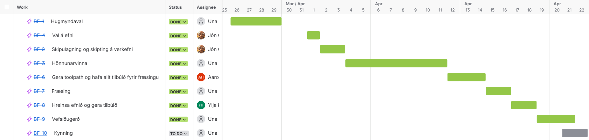
Verkaskipting
Verkefninu var skipt niður í helstu verkþætti og ábyrgð dreift á milli hópmeðlima. Sumir verkþættir voru unnir sameiginlega, en aðrir voru í umsjón ákveðins aðila.
- Hugmyndaval: Allir
- Val á efni: Jón Óskar
- Skipulagning og verkaskipting: Jón Óskar
- Hönnunarvinna: Allir
- Verkfæraferla (Toolpaths): Aaron
- Fræsing: Allir
- Frágangur efnis: Ylja og Aaron
- Vefsíðugerð: Allir
- Kynning: Allir
Val á efni
Helstu borðspil eru gerð úr viði og því var tilvalið að nota einhvern góðan við með flottri áferð. Við skoðuðum nokkur efni sem komu til greina:
- Grenikrossviður: Einfaldur í notkun, en frekar grófur í útliti.
- OSB: Ódýrar plötur, en ekki nógu fallegar fyrir borðspil.
- Furukrossviður: Mjög líkur grenikrossviði, en lítur aðeins betur út.
- Birkikrossviður: Flott áferð, góður fyrir mynstur í efni, en þungur og dýrari.
- MDF: Allt í lagi efni, en ekki mjög heilsusamlegt og ekki mælt með því að fræsa það.
- Valchromat: Tréfjaefni sem fæst í mismunandi litum.
Út frá þessum samanburði töldum við að birkikrossviður væri besta efnið fyrir borðspilakassann, þar sem hann hefur fallega áferð og hentar vel fyrir nákvæma vinnslu. Fyrir spilaborðin sjálf ákváðum við að nota furukrossvið, þar sem hann er léttari og ódýrari, en lítur samt vel út.
Hönnunarferli
Nú þegar gróf hugmynd var kominn fyrir verkefnið og hvernig borðspilakassinn ætti að líta út var hægt að byrja hönnunarferlið. Grunnmælingar voru teknar út frá taflmönnum sem einn hópmeðlimur átti og þá var kominn gróf hugmynd um hversu stór borðspilakassinn myndi verða.
Ákveðið var að nota Fusion 360 til að hanna borðspilasettið, þar sem forritið gerir okkur kleift að vinna með parametra. Þannig er auðvelt að breyta atriðum eins og efnisþykkt, lengdum og öðrum málum eftir þörfum. Fusion 360 er einnig með innbyggt Manufacture-umhverfi, þar sem hægt er að útbúa toolpath og kóða fyrir ShopBot-fræsarann.
Hönnunarferlið tók sinn tíma, hafa þurfti í huga hvað fræsarinn gæti skorið, það væri til dæmis ekki hægt að skera í viðinn frá báðum hliðum, þannig að allt mynstur og gröftur gat einungis verið á einni hlið. Einnig þurfti að ákveða hvernig plöturnar yrðu festar saman og hvaða samskeyti hentuðu best. Eftir að hafa skoðað nokkrar mismunandi útfærslur, til dæmis Japanese Wood Joints, var ákveðið að nota einfaldar finger-joints og mortise-and-tenon samskeyti. Ástæðan var sú að hópurinn hafði nú þegar reynslu af finger-joints, auk þess sem ekki allar gerðir samskeyta hentuðu þegar bæði þurfti að gera mynstur og samskeyti í sömu plötu. Þetta tengdist takmörkunum fræsarans og því hvernig hægt var að vinna efnið. Niðurstöður fyrir borðspilakassann og spilaplöturnar má sjá hér fyrir neðan.
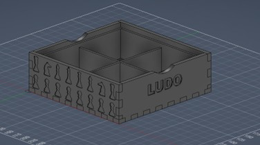
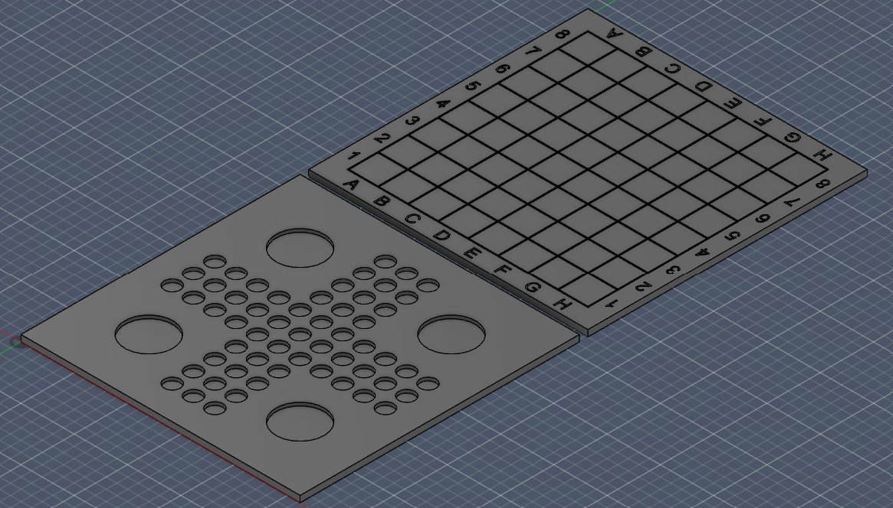
Fyrir flóknari mynstur voru SVG-skjöl sótt af SVG Repo. Skjölin voru síðan undirbúin í Inkscape, þar sem þau voru stillt í rétta stærð fyrir kassann og vistuð sem DXF-skjöl. DXF-skjölin voru því næst flutt inn í Fusion 360 og notuð til að gera cut extrude í plöturnar. Parametrana fyrir borðspilakassann má sjá á Mynd 4.
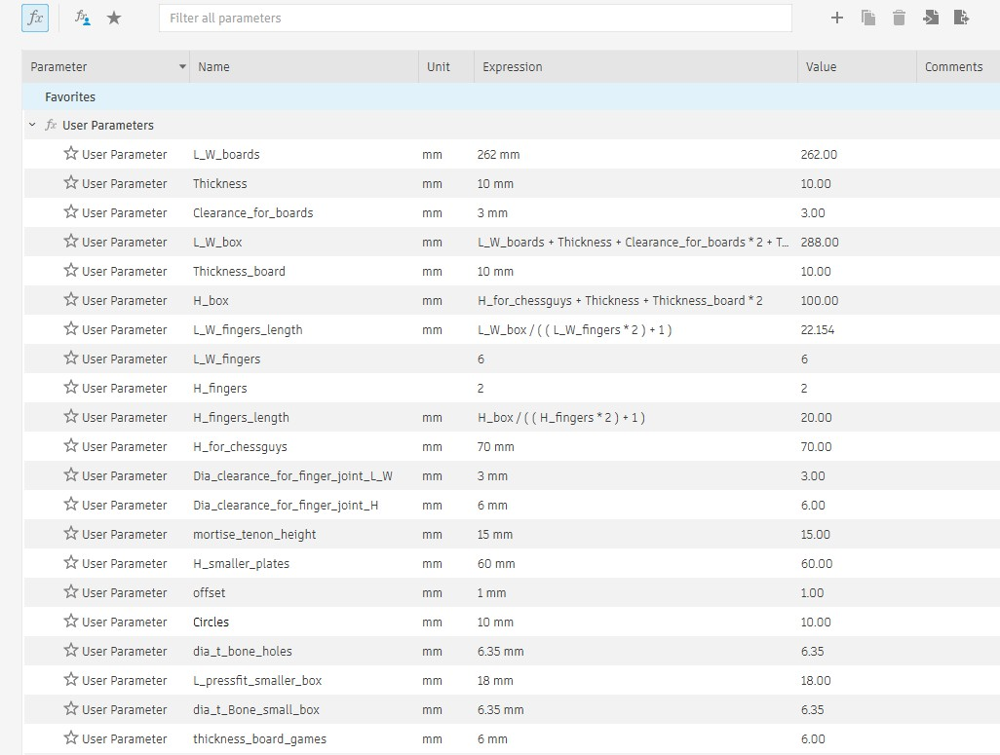
Að lokum þurfti að bæta við svokölluðum T-bones fyrir press-fit samskeytin. Ástæðan er sú að við 2D fræsingu er ekki hægt að mynda fullkomið 90° innra horn, þar sem fræsibitinn skilur alltaf eftir sig rúnnað horn, eða fillet. T-bones eru því notaðir til að fjarlægja þetta efni úr horninu, þannig að hlutar með beinum hornum geti fallið rétt saman. Til þess að fjarlægja allan filletinn þarf yfirskurðurinn að samsvara að minnsta kosti radíus fræsibitans sem er notaður. Hér fyrir neðan má sjá T-bones á kassanum.
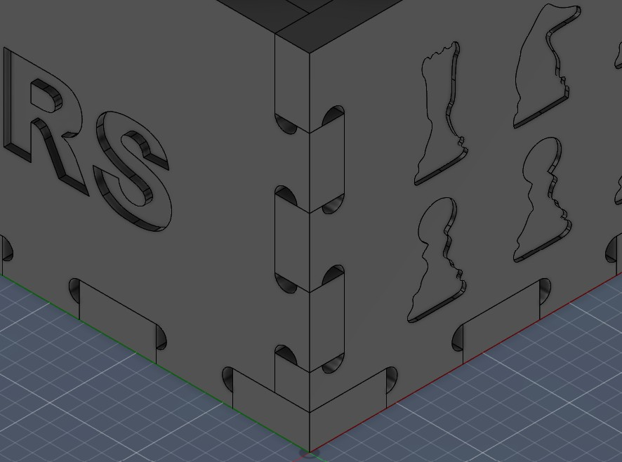
Og hér er lokaútfærslan á borðspilakassanum og spilaborðunum.
Undirbúningur fyrir fræsingu
Lokaval á stærð og gerð efnis
Lokaval á efninu fyrir borðspilakassann endaði á að vera 12 mm þykkur grenikrossviður, þar sem þeir voru nú þegar til í VR3, en platan þurfti að vera 860 mm X 450 mm. Borðspilin voru hins vegar 6 mm þykkur birkikrossviður og það þurfti um 520 mm x 270 mm plötu fyrir þær.
Verkfæraferlar (Toolpaths)
Áður en hægt var að hefja fræsingu þurfti að útbúa verkfæraferla í Fusion 360. Fyrst var skoðað myndbönd frá Fab Lab Akureyri á YouTube til að sjá hvernig toolpaths eru settir upp í Manufacture-umhverfinu. Þar var farið yfir hvernig hægt er að velja rétta aðgerð eftir því hvort verið er að skera út, fræsa niður í efnið eða grafa texta og merkingar. Í verkefninu voru notaðir þrír helstu verkfæraferlar: 2D Contour, 2D Pocket og Engrave.
2D Contour var notað til að skera út ytri útlínur platnanna. Fyrir það var notaður 6 mm flat-end biti. Passað var að stilla inn tabs, en þeir eru litlir stubbar af efni sem eru látnir vera eftir svo plöturnar haldist fastar í heildarplötunni á meðan fræsingin fer fram og því fara plöturnar ekki á hreyfingu. Þeir voru settir á 6 mm breidd og 3 mm hæð.
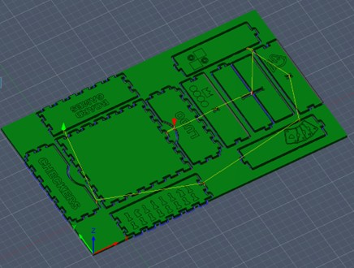
2D Pocket var notað þar sem þurfti að fræsa niður í efnið án þess að skera alveg í gegn. Þar var einnig notaður 6 mm flat-end biti, stilltur sem downcut, til að fá hreinni yfirborðsáferð og minnka líkur á rifum í efsta lagi krossviðarins.
Engrave var síðan notað fyrir texta, tölur og merkingar. Fyrir þann hluta var notaður 30° V-biti, þar sem hann hentar vel fyrir fínni gröft og skýrari línur.
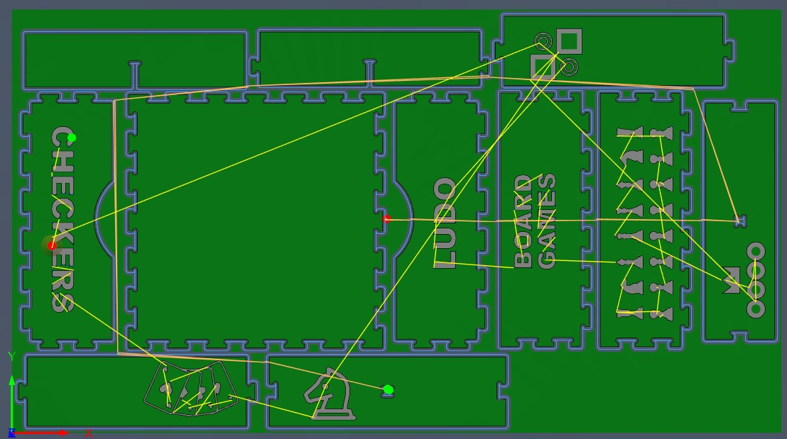
Fyrir 2D Contour og 2D Pocket á borðspilunum voru notaðar sömu Feed and Speed stillingar. Snúningshraðinn var 16000 RPM, skurðarhraðinn 2500 mm/min og Feed per Tooth var 0.156 mm, contour á borðspilakassanum er eins nema með Feed per Tooth = 0.062 mm.Þessar stillingar voru yfirfarnar áður en kóðinn var búinn til fyrir ShopBot-fræsarann.
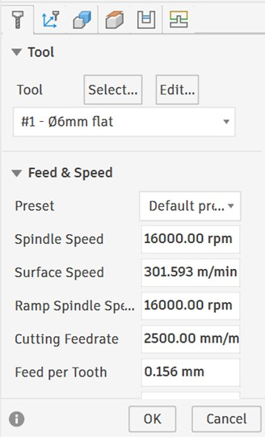
Ferlið fyrir fræsinguna er þannig að fyrsta contour-umferðin er framkvæmd með downcut-bita. Það er gert til að fá hreinni og fallegri áferð á efri brún platnanna . Eftir það eru hlutirnir skornir dýpra í nokkrum umferðum. Þar sem notaður var 6 mm fræsibiti er stepdown stillt á 3 mm, sem samsvarar radíus bitans. Þannig tók fræsirinn 3 mm dýpt í hverri umferð þar til hann hafði skorið í gegnum efnið.
Fræsingin
Þegar öll skjöl voru tilbúin var hægt að hefja fræsinguna. Fyrst var fræsarinn látinn keyra í lausu lofti, þar sem hann var núllstilltur í ákveðinni hæð fyrir ofan krossviðinn. Þetta var gert til að ganga úr skugga um að toolpath-ið væri rétt og að fræsarinn væri að vinna eins og við vildum.
Fræsingin gekk nokkuð vel í heildina. Eina vandamálið var að fræsarinn skar ekki alveg í gegnum efnið í síðustu umferðinni á borðspilakassanum. Því þurfti að keyra eina aukaumferð til að skera alveg í gegn, en það hafði enginn neikvæð áhrif á lokaútkomuna. Líkleg ástæða fyrir þessu var að skurðdýptin í kóðanum var ekki stillt alveg nákvæmlega út frá raunverulegri þykkt plötunnar. Því hefði átt að mæla plötuna nákvæmlega og nota þá þykkt í fræsingunni.
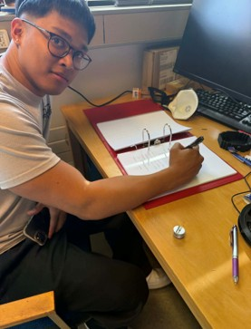
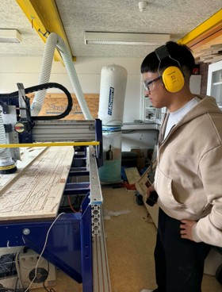
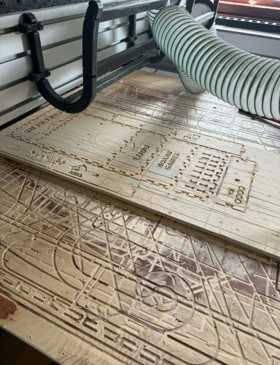
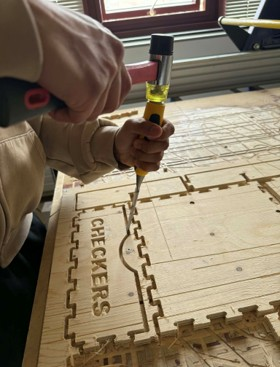
Frágangur efnis og Samsetning
Hér fyrir neðan má sjá allar plötur beint eftir að þær komu úr fræsaranum og búið var að pússa þær allar.
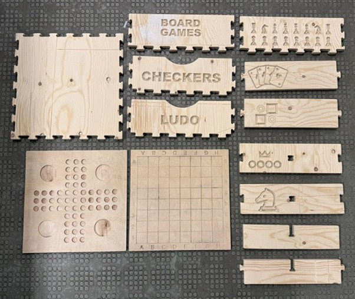
Eftir þetta bárum við viðarolíu á allar plöturnar svo að viðurinn kæmi betur út og fengi meiri dýpt í litinn. Olían hjálpaði einnig til við að draga fram náttúrulega áferð viðarins og gera yfirborðið fallegra. Við bárum olíuna jafnt á með málningarbursta og pössuðum að fara vel yfir alla fleti og kanta.
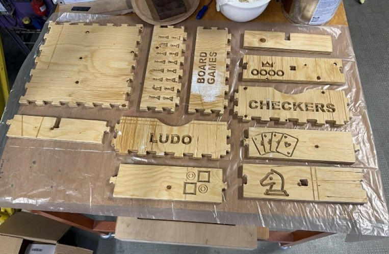
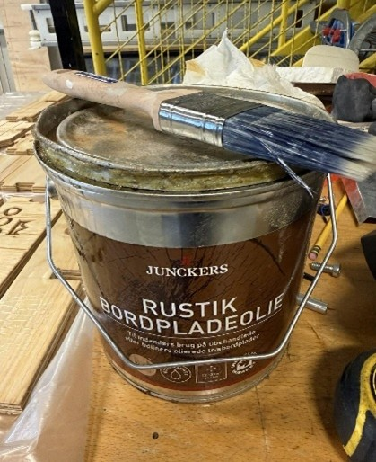
Þegar olían hafði þornað ákváðum við að mála taflborðs- og lúdóplöturnar í litum. Það var gert til að gera borðin skýrari, fallegri og skemmtilegri í notkun. Við pössuðum að mála nákvæmlega innan réttra svæða svo mynstrið kæmi vel út og lokaniðurstaðan yrði snyrtileg. Hér fyrir neðan má sjá lokaútkomu þess.
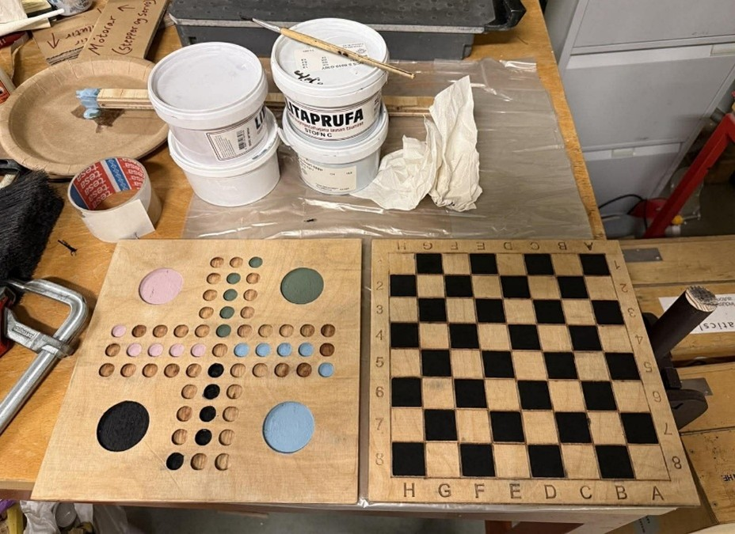
Eftir að plöturnar höfðu þornað var komið að því að setja allt saman. Við rákumst þó á vandamál í samsetningunni þar sem kassinn festist ekki nógu vel saman og var því ekki nægilega stöðugur. Til að leysa þetta límdum við innri hólfin við ytri kassann, sem gerði bygginguna mun sterkari og tryggði að kassinn héldist betur saman.
Líkleg skýring á því af hverju hann var svona laus er að festingarnar voru ekki nógu þéttar. Það gæti hafa gerst vegna þess að fræsingin tók aðeins of mikið efni úr samskeytunum eða vegna þess að efnisþykktin var ekki alveg sú sama og gert var ráð fyrir í hönnuninni. Þar af leiðandi mynduðust smá bil á milli partanna, sem gerði það að verkum að kassinn náði ekki að festast nægilega vel saman.
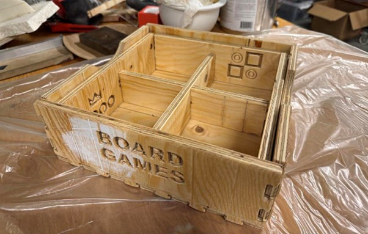
Einnig er gaman að segja frá því að við 3D-prentuðum lúdókalla. Síðan máluðum við þá í sömu litum og reitirnir á lúdóborðinu. Þannig pössuðu kallarnir vel við borðið og allt leit betur út saman. Við geislaskárum líka út svarta og hvíta checkers-kalla.
Lokaniðurstaða
Hér má sjá lokaútkomuna á Borðspilakassanum
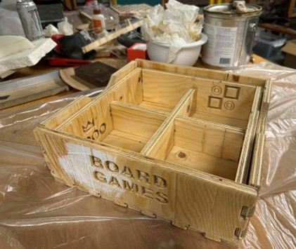
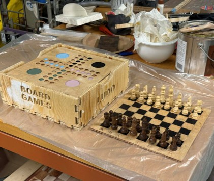
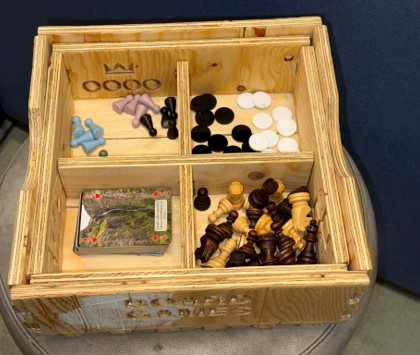
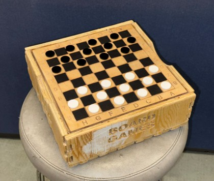
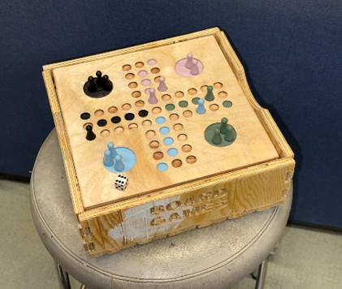
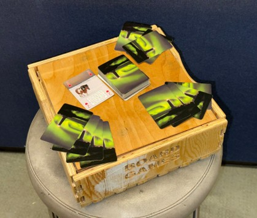
Þrátt fyrir að press-fit samskeytin hefðu mátt heppnast betur erum við ánægð með lokaútkomuna. Borðspilasettið virkar eins og ætlað var, geymir alla helstu hluti á einum stað og hægt er að skipta á milli skákborðs og Lúdóborðs. Verkefnið sameinaði hönnun, verkefnastjórnun, efnisval, CNC-fræsingu, frágang og samsetningu, og gaf okkur góða reynslu af því að fara frá hugmynd yfir í raunverulega framleidda lokaafurð.
Verkefnið kenndi okkur sérstaklega hversu mikilvægt er að hanna ekki aðeins út frá útliti, heldur einnig út frá takmörkunum. Í CAD-líkani getur allt litið út fyrir að passa fullkomlega, en í raunverulegri framleiðslu hafa þættir eins og þvermál fræsibita, raunveruleg efnisþykkt, stefna fræsunar, tabs, skurðdýpt og yfirborðsáferð mikil áhrif á lokaútkomuna. Við lærðum einnig að toolpath-vinnan er stór hluti af verkefninu, þar sem velja þarf rétta aðgerð eftir því hvort verið er að skera í gegn, fræsa vasa eða grafa texta og mynstur.
Ef verkefnið væri endurtekið hefði verið betra að velja aðra samsetningu af fræsibita og efnisþykkt. Þar sem notaður var 6 mm fræsibiti hefði hentað betur að nota þykkara efni, til dæmis um 20 mm krossvið. Þá hefðu T-bones ekki orðið jafn stór hluti af press-fit samskeytunum hlutfallslega séð, og samskeytin hefðu líklega náð betra gripi og orðið stöðugri. Einnig hefði verið áhugavert að skoða aðrar gerðir samskeyta sem gætu hentað betur fyrir krossvið og fræsingu með stórum fræsibita. Til eru margar flottar og áhugaverðar útfærslur sem hefðu mögulega gefið betri lokaútkomu.
Thingiverse
Öll hönnunarskjöl er hægt að nálgast hér, https://www.thingiverse.com/thing:7343949/files